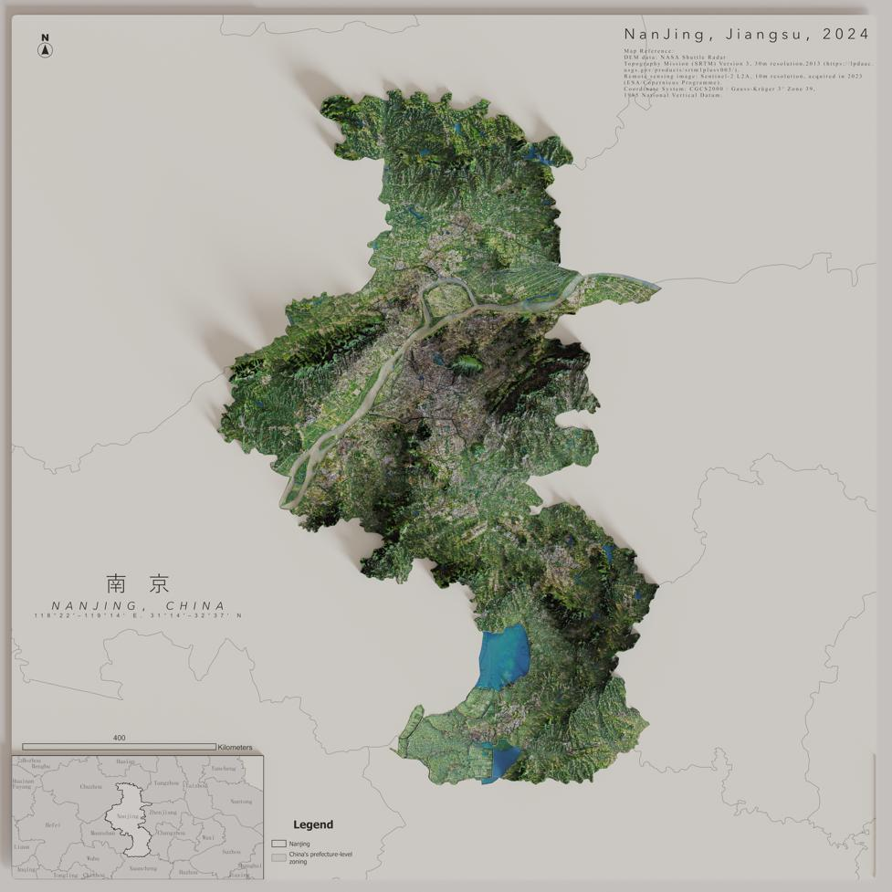
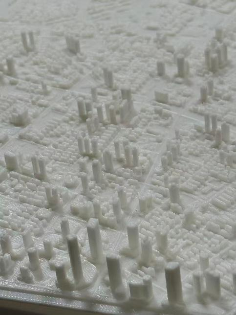

Feng Qi · Spatial designer & GIS practitionerBased in the UK / UCL CASA
Geography, given another dimension.
Scroll to discover ↓01 / Selected work · Graduation project 2026NANJING
NANJING
REIMAGINED.
A CITY. THREE WAYS TO SEE IT.
南京市三维地形晕渲图设计与打印


Scroll through the process ↗
THE COMPLETE SERIES
17 views. One city.
SELECT / EXPAND / EXPLORE ↘01 / 04
Nanjing · the whole city
Figure 15 · A citywide 3D map combining terrain and remote-sensing imagery.
Explore the series
Maps & model photographs by Feng Qi
NUIST · Reading Academy · Graduation project
The question
From pixels
to something
you can hold.
01Prepare the geography
Bring digital elevation, imagery and building-footprint data into a common spatial reference in QGIS. Prepare the terrain and geographic layers for modelling.
02Build the digital landscape
Use Blender to construct terrain, extrude building footprints and develop materials, lighting and shadows. Explore the city at both whole-city and district scales.
03Make it printable
Simplify and repair meshes for a stable physical model. The printed result prioritises tactile readability and structural integrity, with less fine detail than the digital rendering.
Project context & image credits
Selected figures from Design and printing of 3D relief shading map in Nanjing, Feng Qi, 2026. The project compares a digital visualisation workflow and a fabrication workflow using QGIS and Blender. Its maps are design and modelling outputs; rendering detail does not imply measured building-height accuracy.
Data sources described in the thesis include NASA SRTM, Sentinel-2 L2A, © OpenStreetMap contributors, and the credited administrative and base-map sources. The maps are shown in their original colours. Image provenance ↗
PLAY WITH
PERSPECTIVE.
Drag. Zoom. Connect the dots.
Illustrative city · synthetic dataSample locations
This is a browser-based demonstration, not a real city dataset or research result. Keyboard: arrows to pan · + / − to zoom · 0 to reset.
SIDE
EXPLORATIONS.
Small experiments. New possibilities.
Showing 3 projects.
I work where
geography meets
making.
MSc Urban Spatial Science, UCL.
GIS, 3D modelling & digital fabrication.
UCL CASA2026–27 +
MSc Urban Spatial Science, currently studying; expected completion September 2027. Building on undergraduate GIS studies at NUIST and exchange coursework at the University of Reading.
Nanjing Big Data Group2025 +
GIS Data Processing Intern. Cleaned and coordinate-matched healthcare service data, created ArcGIS Pro maps and independently built a public location-search and navigation website.
Turenscape · Beijing2024 +
GIS Analysis Intern. Land-use analysis and ecological sensitivity mapping for Yueyang’s green-space plan, with project visualisations and presentation materials.
Mapping & field researchExplore +
Terrain and hydrological mapping at Zhongshui Northeast Survey, Design and Research; DBSCAN spatial analysis for Hegang planning research; Lushan fieldwork organising over 100 soil and hydrological records.
CONNECT.
felixpetefeng@gmail.comGitHub ↗